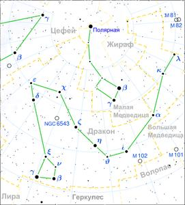

Созвездие Дракона
ИсторияДревнее созвездие. Включено в каталог звёздного неба Клавдия Птолемея «Альмагест». Греческий миф гласит, что это дракон Ладон, которого Гера поместила в саду Гесперид для охраны дерева с золотыми яблоками; добывая эти яблоки, Геракл убил дракона. Другой миф отсылает к походу аргонавтов: дракон Колхис, прототип созвездия, охранял золотое руно (см. также Овен), которое должен был добыть Ясон. Также есть версия, что этим драконом был Пифон. О созвездииДрако́н (лат. Draco) — околополярное созвездие Северного полушария неба. Занимает на небе площадь в 1083 квадратных градуса. В Драконе находится северный полюс эклиптики с экваториальными координатами R.A.=18h00m, Dec=+66°33'. НаблюдениеСозвездие видно на всей территории России круглый год. Наилучшие условия для наблюдения — в марте-мае. Это длинное созвездие охватывает Малую Медведицу с трёх сторон и тянется от Большой Медведицы до Цефея. Между ковшом Малой Медведицы и Вегой можно различить небольшой неправильный четырёхугольник звёзд — астеризм Голова Дракона с яркой звездой Этамин, а рядом с ней Растабан (соответственно γ и β Дракона). По диагонали от γ расположена ν Дракона (Кума). Завершает четырёхугольник звезда ξ — Грумиум (Нижняя Челюсть Дракона). От Головы Дракона можно проследить за остальными звёздами созвездия. |

|
|  | |